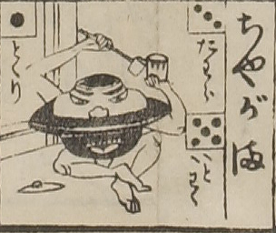

茶釜；チャガマ，男；オトコ

茶釜の化物。頭部が茶釜で、眉目鼻口がついている。蓋は床に置いてある。腕脚が出ていて、右手に柄杓を持ち、左手に茶碗を持って、座っている。
出典：親書誌：U426_nichibunken_0081：大新板化物飛巡双六；オオシンパンバケモノトビマハリスゴロク／日付：2006／資源識別子：U426_nichibunken_0081_0015_0000
Copyright (c)2010- International Research Center for Japanese Studies, Kyoto, Japan. All rights reserved.